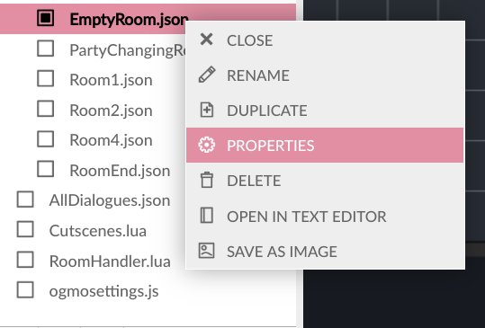
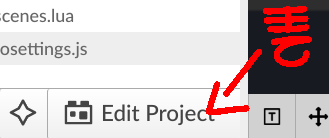

This is non-negotiable.
The Ogmo Editor is an open source tool, available for all 3 major OS, and provides a visual
interface for building tiled rooms (an interface which lacks out of the box!), which will let you perform operations you would otherwise
have to perform "blind".
Don't hold me liable if you choose to manipulate every JSON file by hand. ^^"
The following are properties inherent to the +Overworld library as a whole, not just any one particular room.
Sprite Layering
This is the order used by sprite layers (1 is the abovemost layer, 7 is the belowmost layer):
Audio Channel The +Overworld library uses the NewAudio channel, "BGM" to perform most music-related operations. (That being, playback and audio fading.)
Don't be afraid to open up your Libraries/Overworld/OverworldCore script if you need more information.
Overworld.StartBattleIntro( battle, playhorn)
Overworld.SwapPartyMember( placeInParty, avatarName)
Meant to be used during runtime.
If on your Encounter's EncounterStarting() function, you can simply do: Overworld.party[i] = "AvatarName".
Swaps the avatar avatarName with the party member at the given placeInParty. (Inside the Overworld.party's ). You can even swap with "nil"!
This function will automatically set their position, direction and sprites up for you.
StopPlayer() Stops all Avatars' "Walk" animation (if playing), and sets Overworld.canControl to false.
To manipulate a given room's properties:


hasBackground = false If true, whenever this room is created, a Sprite located within Overworld/Assets/Background sharing this room's exact name will also be created and placed in the background.
Event functions aren't functions that you call by yourself, in order to achieve a particular end.
Rather, they are functions you write inside of, modifying their existing contents.
self.RoomUpdate( currentRoomName) Called every frame, right after detections for Triggers.
self.OnRoomSetup( currentRoomName)
Called after everything else on the room has been created.
Here you may create aditional sprites for each room, using the objects added in Ogmo as a reference.
self.RoomExiting( currentRoomName, nextRoomName) Happens on the bridge between a room and another: That is, once currentRoomName has been destroyed and right before nextRoomName is created.
self.HandleInteractable( nextDialogueTag)
Called when the player's Avatar interacts with an Interactable Trigger by pressing the Confirm key.
When this happens, the Trigger "sends" its current dialogueID to this function.
Then, this functions processes the tag, performing a given action with it.
By default, this function simply stops control of the current Avatar, then opens up a Textbox, concurrently using nextDialogueTag to obtain the text to be displayed.
You can learn more about this process at the Textbox Fuctions & Properties page.
self.OnEncounterEnding( lastBattleName)
Called once an Battle has ended, right after "" is done destroying the battle's UI and Entities, and right before "" begins the Outro animation.
You'll use this to start cutscenes after an battle's over, or to hide certain enemies that couldn't be hidden otherwise.
Check out your existing Overworld/RoomHandler script! You'll find code examples for things you can do with these events.